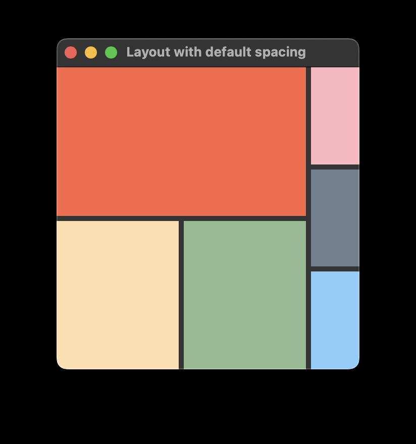
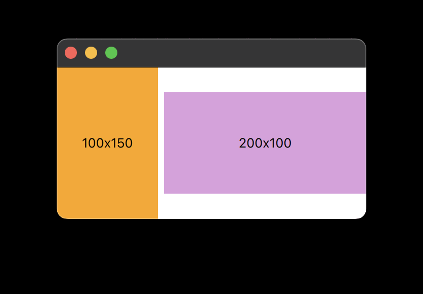

Qt Quick Layouts Overview
Use Qt Quick Layouts to arrange items in a user interface. Qt Quick Layouts resize their items, which makes them well suited for resizable user interfaces.
Key features
Some of the key features of Qt Quick Layouts are:
- Align items with the Layout.alignment property.
- Specify resizable items with the Layout.fillWidth and Layout.fillHeight properties.
- Set size constraints with the Layout.minimumWidth, Layout.preferredWidth, and Layout.maximumWidth properties – "Width" can be replaced with "Height" for specifying similar constraints to the height.
- You can specify spacing with spacing, rowSpacing, or columnSpacing.
- Stretch items both horizontally and vertically with stretch factors.
In addition, GridLayout adds these features:
- Grid coordinates, controlled by the Layout.row and Layout.column properties.
- Automatic grid coordinates used together with the flow, rows, and columns properties.
- Spans across rows or columns, that you can specify with the Layout.rowSpan and Layout.columnSpan properties.
Getting started
To get started using Qt Quick Layouts, import the QML types into your application with the following import statement in your .qml file:
import QtQuick.Layouts
The next step is to create a simple layout. You can also study the Qt Quick Layouts - Basic Example.
A simple layout
The intention of using a layout is to rearrange its children whenever the layout changes size. This means the application must ensure that the layout gets resized. In the following snippet, the RowLayout ensures that by specifying anchors.fill: parent. However, you can also achieve this by other means, such as specifying the width and height properties. In the same snippet, the orange Rectangle has a fixed size of 100 by 150 pixels, and the plum Rectangle will expand to occupy all the space it gets allocated.
Window { RowLayout { anchors.fill: parent spacing: 6 Rectangle { color: 'azure' Layout.preferredWidth: 100 Layout.preferredHeight: 150 } Rectangle { color: "plum" Layout.fillWidth: true Layout.fillHeight: true } } }
Layouts are responsible for their children's geometry. This includes properties such as width, height, x, y, anchors), etc.
Important: Don't specify properties that influence the geometry of child items in your application. Setting these properties on a child item causes a conflict of interest, and the result is undefined. This also applies when the child item is a layout. Therefore, only layouts with no parent layout can have anchors.fill: parent.
Spacing
As seen in the previous snippet, the spacing for the RowLayout is set to 6. This ensures that all items in the layout have 6 pixels of spacing between them:
spacing: 6
If you omit specifying a spacing value, the layout will use a default of 5 pixels. The spacing, as well as the implicitWidth of any children, contributes to the implicitWidth of the layout. This is important to keep in mind if you rely on default behavior, as it may impact your layout design. For example, the two ColumnLayouts both set Layout.fillWidth: true in the following snippet. It's natural to think that they would both get the same width. However, because of the default 5 pixel spacing between the items in the inner RowLayout, the implicitWidth of the first ColumnLayout becomes larger, leaving less room for the second one. For example:
ApplicationWindow { id: root width: 300 height: 300 visible: true RowLayout { anchors.fill: parent ColumnLayout { Rectangle { color: "tomato"; Layout.fillWidth: true Layout.fillHeight: true } RowLayout { Rectangle { color: "navajowhite" Layout.fillWidth: true Layout.fillHeight: true } Rectangle { color: "darkseagreen" Layout.fillWidth: true Layout.fillHeight: true } } } ColumnLayout { Rectangle { color: "lightpink" Layout.fillWidth: true Layout.fillHeight: true } Rectangle { color: "slategray" Layout.fillWidth: true Layout.fillHeight: true } Rectangle { color: "lightskyblue" Layout.fillWidth: true Layout.fillHeight: true } } } }
This snippet will produce a layout that looks like this:

To ensure equal size of these two columns, you can either
- set the spacing of the RowLayout to
0, or - set preferredWidth to equal values on both ColumnLayouts.
Specifying preferred size
For each item, the effective preferred size may come from one of several candidate properties. For determining the effective preferred size, an item queries these candidate properties in the following order, and will use the first candidate with a valid width or height.
| Candidate properties | Description |
|---|---|
| Layout.preferredWidth or Layout.preferredHeight | These properties are supposed to be modified by the application if the default implicit size does not give the optimal arrangement. |
| implicitWidth or implicitHeight. | These properties are supposed to be supplied by each item to give a meaningful ideal size. For example, the size needed to display all the contents of a Text type. An implicit width or height of 0 is interpreted as invalid. |
An item can specify Layout.preferredWidth without having to specify Layout.preferredHeight. In such cases, the effective preferred height is determined from the implicitHeight.
Note: If you don't specify neither preferredWidth nor implicitWidth, the Layout will query width as an ultimate value for the effective preferred width. However, you shouldn't rely on width as a source for the effective preferred width, as that may cause unexpected behavior. For instance, changing the width or height properties won't trigger a layout rearrangement, or the layout might use the actual width and height – not the width and height specified in your QML file – when forced to do a full rebuild.
Size constraints
Since an item can be resized by its layout, the layout needs to know the minimum, preferred, and maximum sizes of all items where Layout.fillWidth or Layout.fillHeight is set to true.
The preferred width and height is the actual width and height of an item, if the layout is not bound to a specific size itself. If the layout is set to a specific size, it distributes additional space based on the ratio of preferred sizes of its items, while taking minimum and maximum sizes into account. The preferred and implicit sizes act as ratios and weights when all items set fillWidth and fillHeight.
For instance, the following produces a layout with two rectangles lying side-by-side that stretches horizontally. The orange Rectangle can be resized from 50x150 to 300x150, and the plum Rectangle can be resized from 100x100 to ∞x100. As long as the minimum and maximum width of each item isn't exceeded, the plum rectangle will have twice the width of the orange one.
RowLayout { id: layout anchors.fill: parent spacing: 6 Rectangle { color: 'orange' Layout.fillWidth: true Layout.minimumWidth: 50 Layout.preferredWidth: 100 Layout.maximumWidth: 300 Layout.minimumHeight: 150 Text { anchors.centerIn: parent text: parent.width + 'x' + parent.height } } Rectangle { color: 'plum' Layout.fillWidth: true Layout.minimumWidth: 100 Layout.preferredWidth: 200 Layout.preferredHeight: 100 Text { anchors.centerIn: parent text: parent.width + 'x' + parent.height } } }

Combining each item's constraints gives these implicit constraints to the layout element:
| minimum | preferred | maximum | |
|---|---|---|---|
| implicit constraints (width) | 156 | 306 | ∞ (Number.POSITIVE_INFINITY) |
| implicit constraints (heights) | 150 | 150 | 150 |
Thus, the layout cannot be narrower than 156, nor can it be taller or shorter than 150, without breaking any of the constraints of its child items.
Connecting windows and layouts
You can use normal anchoring concepts to ensure that your layout follows the window resizing.
RowLayout { id: layout anchors.fill: parent
You can rely on the size constraints of layouts to ensure that the window cannot be resized beyond the layout constraints. You can take the size constraints from the layout and set these constraints on the minimumWidth, minimumHeight, maximumWidth, and maximumHeight of the Window element. The following code ensures that the window cannot be resized beyond the constraints of the layout:
minimumWidth: layout.Layout.minimumWidth minimumHeight: layout.Layout.minimumHeight maximumWidth: 1000 maximumHeight: layout.Layout.maximumHeight
Note: Because layout.Layout.maximumWidth is infinite in this case, we cannot bind that to the maximumWidth property of Window, as that is an integer number. Therefore, the maximum width is set to a fixed value of 1000.
Finally, set the initial size of the window to be the layout's implicit size:
width: layout.implicitWidth height: layout.implicitHeight
Spanning and stretching Items
Use spans in a GridLayout to make child items occupy more than one cell. For example, you may have a GridLayout with six cells across two rows. The top row contains the Items item1, item2, and item3. The bottom row contains the Item item4, which specifies columnSpan: 3 and alignment: Qt.AlignHCenter. This places item4 in the middle of the three cells that make up the bottom row. The following snippet serves as an example:
ApplicationWindow { id: root width: 300 height: 300 visible: true GridLayout { rows: 2 columns: 3 Rectangle { color: 'cyan' implicitWidth: 50 implicitHeight: 50 } Rectangle { color: 'magenta' implicitWidth: 50 implicitHeight: 50 } Rectangle { color: 'yellow' implicitWidth: 50 implicitHeight: 50 } Rectangle { color: 'black' implicitWidth: 50 implicitHeight: 50 Layout.columnSpan: 3 Layout.alignment: Qt.AlignHCenter } } }
The size of rows and columns are given implicitly by their contents. For example, a Button may impact the width of the column it's in, or the height of the row it's in. This means GridLayout doesn't have uniform distribution. Because of this, you can't use a span to stretch a layout. To manipulate the stretch of an item or layout, use stretchFactors and/or size hints instead.
Note: When setting implicit or preferred sizes, don't bind the respective properties to the width or height of the layout itself or items it depends on for its size calculations, as this can cause cyclic dependencies that are hard to track down.